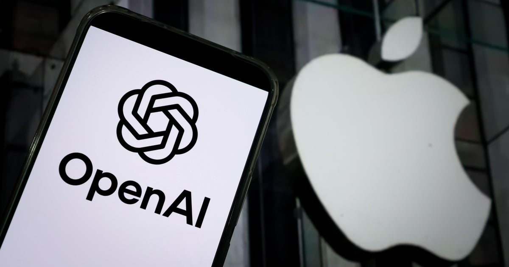

В пятницу 27 ноября OpenAI подала встречный иск к Apple в федеральный суд Северной Калифорнии. Ответ AI-компании последовал на июньский иск Apple, в котором производитель iPhone обвиняет OpenAI в краже проприетарной информации. По утверждению истца, кадровые практики Apple создают «ситуацию, в которой практически любой уволившийся сотрудник и его новый работодатель могут быть обвинены в „краже" якобы коммерческих тайн Apple». В OpenAI добавляют: эта ловушка «может сработать всякий раз, когда Apple видит возможность затормозить потенциального конкурента».
Первоначальный иск Apple называет двух сотрудников OpenAI — главного аппаратного директора Тан Тан и инженера Чан Лю, обоих ex-сотрудников Apple. Компания считает, что они забрали с собой секретные сведения о нерелизованных разработках, процессах и продуктах. Суд уже обязал OpenAI прекратить использование конфиденциальной информации Apple. В комментарии CBS News в Apple подчеркнули, что дело касается «преднамеренной кражи, доступа и использования секретной информации», а не случайного хранения материалов, и назвали встречный иск «прозрачной попыткой отвлечь внимание от существа дела».
Юридический конфликт разгорается на фоне планов OpenAI выйти в аппаратный бизнес: аналитики ждут от компании собственных устройств, что делает её прямым конкурентом Apple. В июле 2025 года OpenAI купила компанию io Products, основанный легендарным дизайнером Apple Джоном Айвом. Ещё в августе OpenAI отвергала обвинения Apple, называя иск попыткой помешать найму специалистов; теперь же компания перешла в наступление, утверждая, что Apple «подставляет» уходящих сотрудников, чтобы потом шантажировать их новых работодателей.
Отдельного официального анонса на блоге OpenAI нет: речь о судебном документе, поданном в суд первой инстанции. Первым о контриске сообщил Financial Times, факты и прямые формулировки сторон подтверждены материалами CBS News и Reuters.
Что это меняет. Для рынка это сигнал, что война за кадры между Apple и OpenAI перешла из области переманивания в courtroom-плоскость: теперь каждое увольнение инженера из Купертино в AI-лабораторию может заканчиваться новым иском.